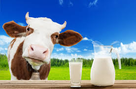

Quantas Gramas de Proteína tem o Leite de Vaca

Um copo de 200ml de leite integral contém aproximadamente 6g de proteína de alta qualidade. O leite é fonte de caseína e whey protein, proteínas de absorção lenta e rápida respectivamente. Rico em cálcio, vitamina D e vitaminas do complexo B, é um alimento completo para saúde óssea e muscular.
Tipos de leite e proteína (por 200ml):
- Integral: 6g proteína
- Semidesnatado: 6g proteína
- Desnatado: 6.4g proteína
- Zero Lactose: 6g proteína